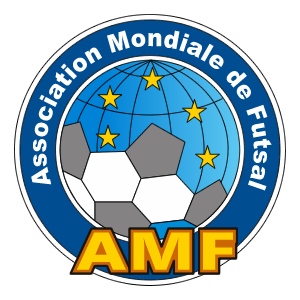

Confederaciones del futsala
Luego, de más disputas se formó en 1990 la Confederación Panamericana de Fútbol de Salón, con Paraguay, Colombia, Uruguay, México, Costa Rica, Venezuela, Argentina, Bolivia, Puerto Rico, Ecuador, Canadá, Aruba y Antillas Holandesas.
Después esta confederación pasó ser AMF (Asociación Mundial de Futsal), un gobierno internacional de futsal independiente de la FIFA. Actualmente ambas organizaciones gobiernan este deporte.
AMF tiene 58 países miembros y 6 miembros continentales.
En España existe la Liga Nacional de Fútbol Sala, que regula este juego en sus diferentes categorías, infantiles, juveniles y profesionales. Así como femeninas y masculinas. Además, nuestro país participa en diversas competiciones internacionales de futsal.
El fútbol de salón es un deporte creado en Uruguay en 1930. En 1965, se creó la Confederación Sudamericana de Fútbol de Salón (CSFS), primera organización internacional del deporte, en la actualidad afiliada a la AMF y en 1971 fundadora de la Federación Internacional de Futsal (FIFUSA), antecesora directa de la AMF. En 1982 la FIFUSA organizó de manera directa el primero de tres campeonatos mundiales que realizaría hasta su disolución en el año 1990, aunque posteriormente la Confederación Panamericana de Futsal (PANAFUTSAL), entidad creada después de la desaparición de FIFUSA, organizó cuatro mundiales más a nombre de la antigua federación hasta la fundación de la AMF en el año 2002.
La FIFUSA y la FIFA mantuvieron un conflicto por el uso del nombre "fútbol", que se resolvió en la década de 1980, reservando "fútbol sala" sólo para las actividades realizadas bajo supervisión de la FIFA. A raíz de ello, la FIFUSA decidió en 1985, denominar al deporte como "futsal"; nombre que luego también ha sido usurpado por la misma FIFA.
En 1990 las federaciones sudamericanas y del resto del continente formaron la Confederación Panamericana de Futsal (PANAFUTSAL). Esta organización, creada después de la desaparición de FIFUSA por problemas económicos, firmó en el año 2000 una carta de intención con la FIFA para integrarse a la misma. Sin embargo, el acuerdo no prosperó y los miembros de la PANAFUTSAL crearon una nueva asociación del deporte a la que se unieron las federaciones nacionales de otros continentes. De este modo, en diciembre de 2002 se fundó la Asociación Mundial de Futsal (AMF), integrada por las federaciones exmiembros de la FIFUSA (anterior organización).
